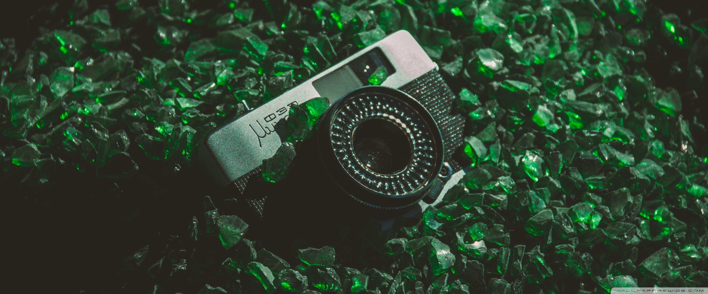
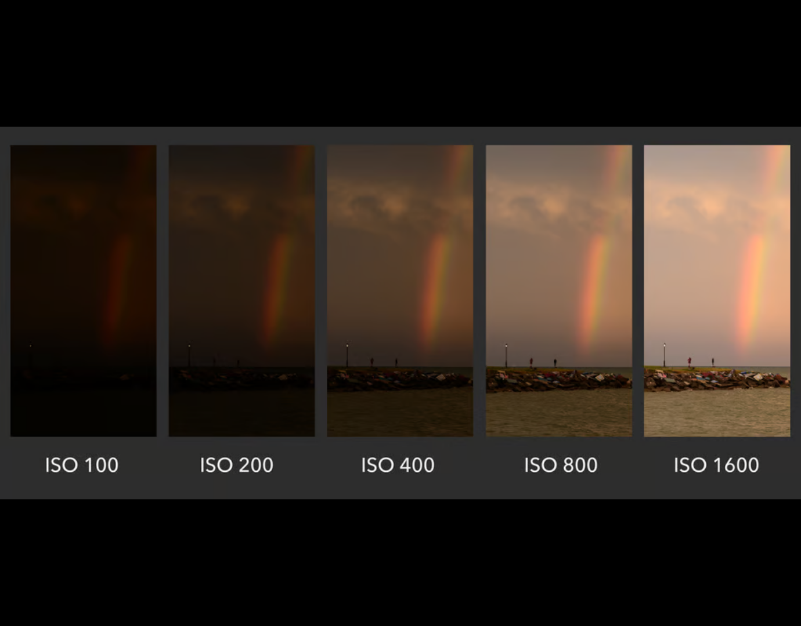
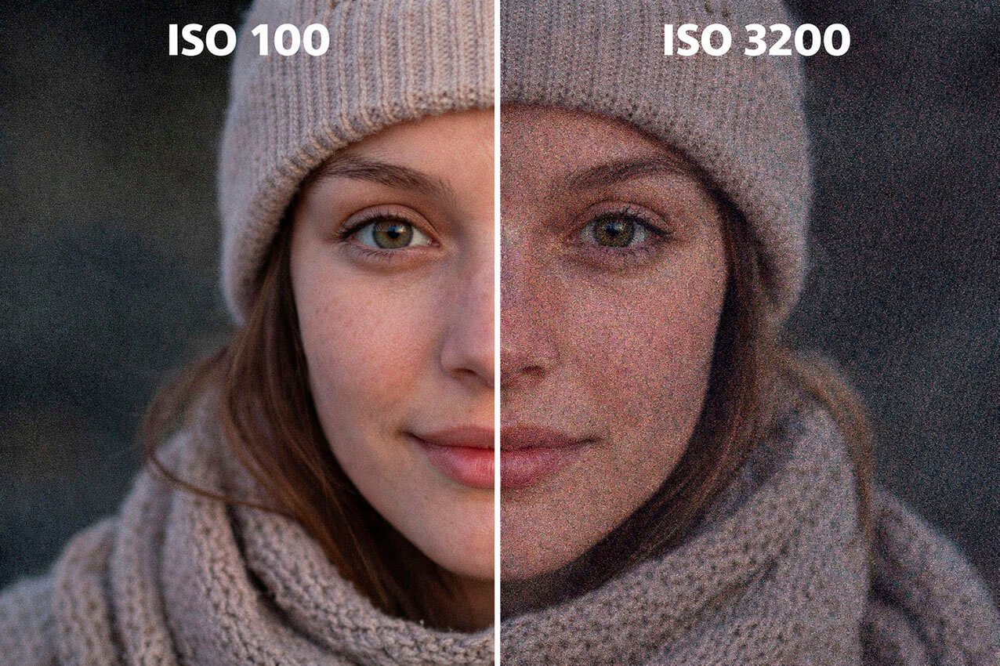
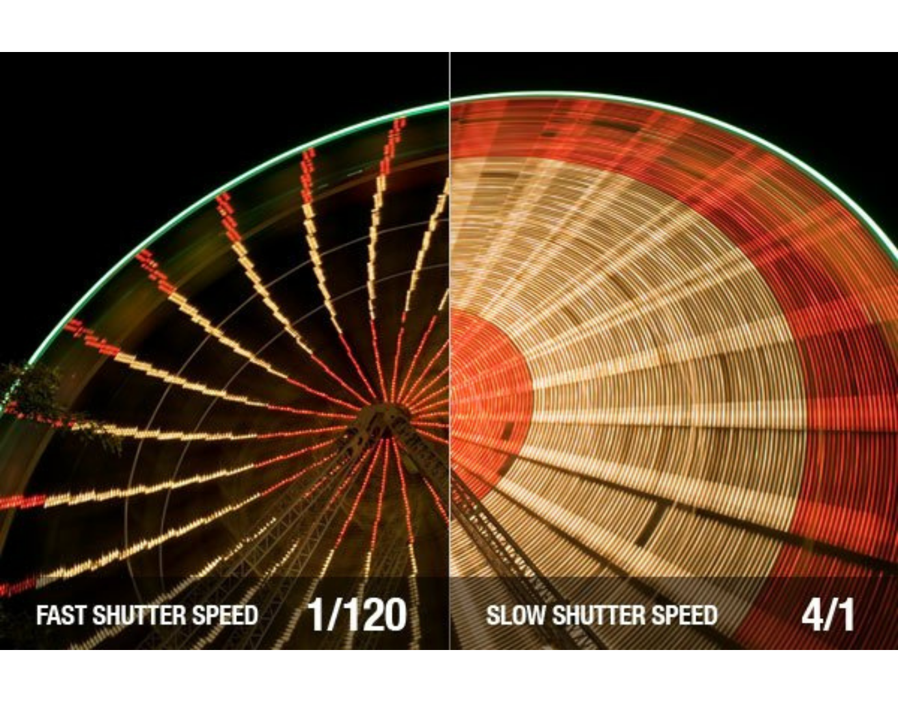
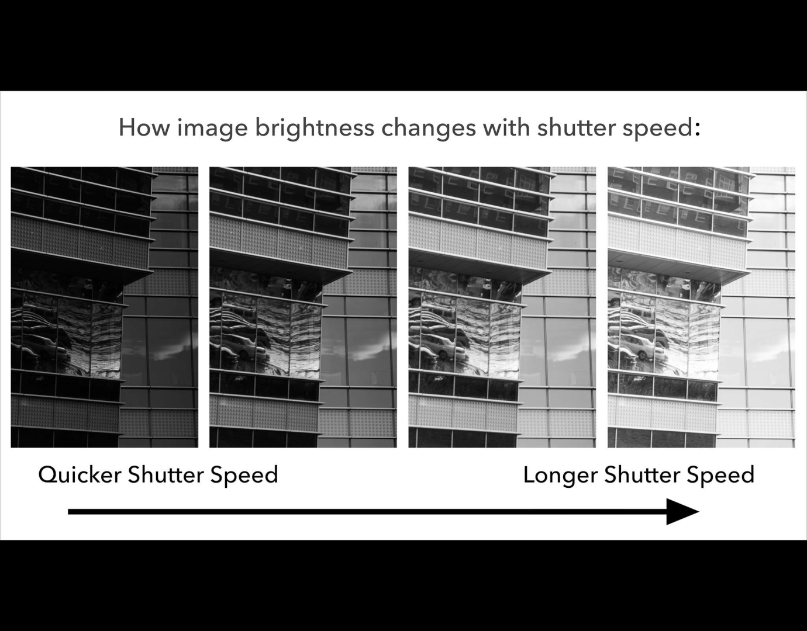
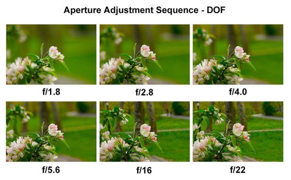

Le triangle d'exposition

Sensibilité ISO
C'est un réglage électronique qui consiste à augmenter ou baisser la sensibilité du capteur à la lumière. En ajouter beaucoup voire trop augmente le bruit numérique de votre photo. Il est recommandé de le garder au plus bas possible sans que l'image ne soit trop sombre non plus, à moins que ce soit une volonté artistique.


Vitesse d'obturation
La vitesse d'obturation est un réglage électronique qui va changer la vitesse d'exposition à la lumière. Plus elle sera rapide plus l'image sera figée sera sombre, plus elle sera lente et plus le mouvement sera prononcé (C'est ce qui crée du flou volontaire ou non)


Ouverture du diaphragme
L'ouverture du diaphragme est un réglage qui permet de plus ou moins ouvrir le diaphragme de votre objectif. Plus la valeur est basse plus il sera ouvert plus vous capter de lumière mais la profondeur de champs sera amoindrie, à l'inverse plus il est fermé et moins de lumière sera capté mais le profondeur de champs sera agrandie
